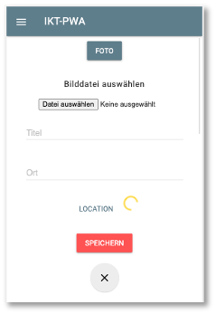

Gerätezugriffe¶
Nun wollen wir noch auf Geräteschnittstellen zugreifen. Dazu gehören die Kamera und auch die Geolocation-API, um unseren Standort zu ermitteln. Früher war JavaScript eine "SandBox", d.h. JavaScript-Code war vollständig innerhalb des Browsers gekapselt und hatte keinerlei Zugriff nach außen. Das änderte sich mit dem Upload File-Button. JavaScript bekam (sehr eingeschränkten) Zugriff auf das Dateisystem (nur lesend). In der Zwischenzeit hat sich das komplett gewandelt. JavaScript läuft erstens auch auf Servern und hat zweitens über eine Vielzahl von APIs Zugriff auf unterschiedlichste Schnittstellen zum System. Wir wollen hier betrachten, wie JavaScript auf Kamera und den Standort zugreifen kann.
Anpassung der Anwendung¶
Ausgangspunkt ist dieser Stand des Projektes, den wir nach dem Einfügen von Push-Notifications erreicht haben. Wir wollen nun die Kamera verwenden, um Bilder aufzunehmen, dazu erweiteren wir die Anwendung zunächst, um neben title und location auch noch ein drittes EIngabefeld für die Bilder zu erhalten.
Dazu erweiteren wir zunächst die public/index.html:
65 66 67 68 69 70 71 72 73 74 75 76 77 78 79 80 81 82 83 84 85 86 87 88 89 90 91 92 93 94 95 96 97 98 | |
Das <video>- (Zeile 2) und das <cabvas>-Element (Zeile 3) werden verwendet, um mit der Kamera Bilder aufzunehmen, die mit dem <button> (Zeile 3) gespeichert werden. Der file-picker (Zeilen 7-9) wird benötigt, falls das Gerät über keine Kamera (oder keinen Kamerazugriff) verfügt. Außerdem fügen wir noch eine weitere Eingabesection für die Location hinzu mit einem Button und einem spinner, der anzeigen soll, dass etwas passiert.
Wir verwenden die CSS-Klassen und -Ids auch noch, um die Eingabe etwas "schöner" aussehen zu lassen und erweiteren dazu die feed.css:
1 2 3 4 5 6 7 8 9 10 11 12 13 14 15 16 17 18 19 20 21 22 23 24 25 26 27 28 29 30 31 32 33 34 35 | |
Die CSS-Definitionen sorgen insbesondere dafür, dass das Video- , Canvas- und File-Picker-Element zunächst versteckt ist.
DOM-Zugriff¶
Wir wollen uns zunächst darum kümmern, ein Live-Bild der Kamera in das Canvas-Element zu integrieren, d.h. wir kümmern uns zunächst um den Kamerazugriff.
Kamera¶
Für den Kamerazugriff benötigen wir etwas JavaScript-Code. Wir erweitern die feed.js. Zunächst vereinfachen wir die Zugriffe auf die einzelnen Elemente und fügen eine Funktion hinzu, mit der wir den Zugriff auf die Kamera prüfen und herstellen wollen:
1 2 3 4 5 6 7 8 9 10 11 12 13 14 15 16 17 18 19 20 21 | |
In der neuen Funktion initializeMedia() wollen wir die MediaDevices-API verwenden. Ein Blick in die Dokumentation dieser API zeigt, dass die Browser-Unterstützung noch nicht besonders gut ist, zumindest für einige der Methoden darin. Wir wollen aber insbesondere die getUserMedia()-Funktion verwenden und dafür ist die Browser-Unterstützung wiederum doch sehr gut (Chrom, Firefox, Edge und alle mobilen Geräte).
Für den Fall, dass die MediaDevices-API nicht unterstützt werden, erstellen wir uns im navigator ein eigenes mediaDevices-Objekt und prüfen, ob die getUserMedia()-Funktion unterstützt wird. Wenn dies nicht der Fall ist, erstellen wir uns für das neue mediaDevices-Objekt eine neue Eigenschaft getUserDevices und definieren es als eine Funktion. Diese Funktion nutzt dann alte Funktionen, die in den jeweiligen Browsern angeboten wurden (und werden). Wie gesagt, das ist nur ein Fallback für den Fall, dass ein Browser verwendet wird, der die getUserMedia()-Funktion in der MediaDevices-API nicht unterstützt (was, wie wir oben erläutert haben, nur noch selten der Fall ist). Wir erweitern für diesen seltenen Fall die initializeMedia()-Funktion:
14 15 16 17 18 19 20 21 22 23 24 25 26 27 28 29 30 31 32 | |
Wenn also die MediaDevices-API nicht unterstützt wird (Zeile 15), dann erstellen wir einen eigenes MediaDevices-Objekt (Zeile 16). Für dieses eigene MediaDevices-Objekt erstellen wir eine getUserMedia()-Funktion (Zeile 20). Diese Funktion gibt eine Promise zurück. Entweder, eine Promise mit dem Zustand rejected (Zeile 24), nämlich genau dann, wenn der Browser auch nicht die alten Funktionen webkitUserMedia und mozGetUserMedia unterstützt. Dann können wir wirklich nichts mehr machen. Oder die Promise verwendet eine der beiden Funktionen und gibt die Promise nach Anwendung zurück - kann natürlich trotzdem noch sein, dass sie rejected wird, aber vielleicht auch resolved. Jedenfalls bezieht sich dieser gesamte Code auf den Fall, dass getUserMedia() in navigator.mediaDevices nicht unterstützt wird. Es handelt sich bei diesem Code um ein sogenanntes Polyfill.
Wir kümmern uns jetzt darum, tatsächlich Zugriff zur Kamera zu bekommen. Das kann nun entweder über die moderne getUserMedia()-Funktion aus navigator.mediaDevices geschehen oder über das Polyfill unter Verwendung von webkitGetUserMedia() oder mozGetUserMedia(). Nur für den Fall, dass wir keinen Zugriff auf die Kamera erhalten, wollen wir den File-Picker verwenden, um eine Bilddatei hochzuladen.
14 15 16 17 18 19 20 21 22 23 24 25 26 27 28 29 30 31 32 33 34 35 36 37 38 39 40 41 | |
An Zeile 32 können wir auf jeden Fall auf die getUserMedia()-Funktion zugreifen und genau das tun wir auch in Zeile 33. Dieser Funktion wird ein JavaScript-Objekt übergeben. Dieses Objekt hat zwei Eigenschaften: video und audio. Beide sind auf false gesetzt, wir können sie jedoch mit true einschalten und erledigen das für video ebefalls in Zeile 33. Diese Funktion gibt eine promise zurück. Im resolve-Fall erhalten wir einen Video- und/oder Audio-Stream. Wir verwenden diesen stream als Quelle für unseren Videplayer (der aufgrund der Funktion autoplay den Stream sofort anzeigt). Wir setzen dafür den Videoplayer auf sichtbar - display: 'block'.
Der reject-Fall der Promise kann verschiedene Gründe haben. Ein Grund wäre, wie oben erläutert, dass wir selbst mit dem Polyfill keinen Zugriff auf die Kamera bekommen. Ein anderer wäre, dass unser Gerät gar nicht mit einer Kamera verbunden ist und ein dritter Fall wäre, dass der Zugriff auf die Kamera von der Nutzerin blockiert wird. Wenn die getUserMedia()-Funktion das erste Mal aufgerufen wird, erfolgt eine Abfrage, ob der Zugriff auf die Kamera zugelassen oder blockiert wird:

Die Entscheidung lässt sich auch nachträglich ändern, indem man auf das i links neben der URL klickt. Wenn Sie die Anwendung ausführen und den Zugriff auf die Kamera erlauben, wird das Video sofort angezeigt.

Wird die Promise rejected, soll die gesamte imagePickerArea (wieder) auf display: 'block' gesetzt werden. In der Funktion closeCreatePostModal() setzen wir die Video- und File-Picker-Elemente ebenaflls alle (wieder) auf display: 'block'.
48 49 50 51 52 53 | |
Wird der Zugriff auf die Kamera blockiert, wird stattdessen der File-Picker angezeigt:

Nun wollen wir den Foto-Button implementieren, damit wir ein Foto von dem Kamerastream erzeugen können. Dazu implementieren wir für diesen Button die Behandlung des click-Ereignisses:
43 44 45 46 47 48 49 50 51 52 | |
Die Grundidee dabei ist die, dass wir das ktuelle Bild des videoPlayers in unser canvasElement einfügen, das canvasElement sichtbar gestalten, den videoPlayer unsichtbar (und den Button dann auch gleich noch) und außerdem den Videoplayer stoppen.
Das Canvas-Element verfügt über einen Grafikkontext, den wir in Zeile 52 als 2d auswählen. Siehe dazu auch HTMLCanvasElement.getContext(). Für diesen context rufen wir die drawImage()-Funktion auf (siehe CanvasRenderingContext2D.drawImage()).
- der erste Parameter der
drawImage()-Funktion ist das Bild. Wir übergeben dazu denvideoPlayer. - der zweite und dritte Parameter ist die Koordinate des linken oberen Punktes innerhalb des Canvas-Elementes, hier
x=0undy= 0. - der dritte Parameter gibt die Breite des Bildes an. Wir nehmen hier die gesamte Breite des Canvas-Elementes.
- der vierte Parameter gibt die Höhe des Bildes an. Da wir der Breite einen festen Wert zugewiesen haben (die Canvas-Breite), müssen wir die Höhe in Abhängigkeit der Relation des Videos berechnen.
Wenn wir dieses Bild erstellt haben, können wir den Videoplayer stoppen. Die Funktion getVideoTracks() gibt ein Array allerlaufenden Streams auf der Webseite zurück. Wir laufen durch dieses Array mithilfe der forEach-Schleife (Zeile 54) und stoppen alle laufenden Streams (Zeile 55).
Wenn wir nun den Foto-Button klicken, sehen wir das (Stand-)Bild im canvasElement, der videoPlayer und der Button sind unsichtbar und der videoPlayer ist gestoppt.
Speichern des Bildes im Backend¶
Das so aufgenommene Foto wollen wir nun im Backend speichern. Dafür ist im Backend zum Glück schon alles vorbereitet. Das Bild ist jetzt im Canvas, wir müssen es noch in einen `base64String umwandeln. Wir definieren uns zwei neue Funktionen. Die eine wandelt das Bild in das blob-Format um. Das könnte man auch schon in die Datenbank speichern, aber wir haben das Backend so geschrieben, dass es einen base64String erwartet. Deswegen wandeln wir das blob-Format auch noch in diesen base64String um. Wir verwenden dazu jeweils Funktionen, die man im Netz findet. Ich habe diese jetzt zusammen mit der urlBase64ToUint8Array(base64String)-Funktion aus dem vorherigen Kapitel in eine eigene utility.js-Datei gepackt, um die Funktionen etwas besser zu strukturieren. Hier die neue Datei mit den neuen Funktion dataURItoBlob(dataURI) und blobToBase64 und der alten urlBase64ToUint8Array(base64String), die ich aus app.js entfernt und hierher verschoben habe.
1 2 3 4 5 6 7 8 9 10 11 12 13 14 15 16 17 18 19 20 21 22 23 24 25 26 27 28 29 30 31 32 33 34 35 36 37 | |
Die blobToBase64 ist als Promise definiert. Die neue Datei utility.js muss nun in die index.html eingebettet werden:
117 118 119 120 121 122 | |
Mit diesen Hilfsfunktionen sind die Anpassungen recht logisch, die wir nun vornehmen müssen, um die Daten in das Backend zu speichern.
In der feed.js erstellen wir uns für den base64String eine globale Variable und weisen dieser den entsprechenden Wert zu, sobald wir das Foto aufgemommen haben:
1 2 3 4 5 6 7 8 9 10 11 12 13 14 15 16 17 18 19 20 21 22 23 24 25 26 27 28 29 30 31 32 33 34 35 36 37 38 39 40 41 42 43 44 45 46 47 48 49 50 51 52 53 54 55 56 57 58 59 60 61 62 63 64 65 66 67 68 69 70 71 72 73 74 75 76 77 78 79 80 81 82 83 84 85 86 87 88 89 90 91 92 93 94 95 96 97 98 99 100 101 102 103 104 105 106 107 108 109 110 111 112 113 114 115 116 117 118 119 120 121 122 123 124 125 126 127 128 129 130 131 132 133 134 135 136 137 138 139 140 141 142 143 144 145 146 147 148 149 150 151 152 153 154 155 156 157 158 159 160 161 162 163 164 165 166 167 168 169 170 171 172 173 174 175 176 177 178 179 180 181 182 183 184 185 186 187 188 189 190 191 192 193 194 | |
In Zeile 13 ist die Deklaration der globalen Variablen. In den Zeilen 53-61 wird das Bild in einen base64String umgewandelt (unter Verwendung der neuen Funktionen aus der utility.js). Für das Senden der Daten an das Backend wird nun für die image-Eigenschaft der Wert aus der globalen Variablen gelesen und das Gleiche passiert, wenn wir das Bild in die IndexedDB speichern, um es per Hintergrundsynchronisation an das Backend zu senden.
Bei der Behandlung des sync-Events im Service Worker lesen wir nun auch diesen Wert für die image-Eigenschaft aus:
104 105 106 107 108 109 110 111 112 113 114 115 116 117 118 119 120 121 122 123 124 125 126 127 128 129 130 131 132 133 134 135 136 137 138 139 | |
Das war es schon, wir können nun die Daten an das Backend senden. Zum Testen nehmen Sie ein Foto auf, geben einen Titel und eine Location ein und klicken den Speichern-Button. Dann lednet - hoffentlich - alles im Backend (über den "Umweg" IndexedDB natürlich). Sie erhalten auch eine Push-Nachricht, dass die Daten gespeichert wurden.
Wir implementieren nun noch den Fall, dass die Kamera nicht zur Verfügung steht oder die MediaDevices-API oder der Kamerazugriff blockiert wurde und ermöglichen dafür das Hochladen einer Bilddatei.
Bilddatei hochladen¶
Das Hochladen einer Bilddatei kennen wir ja bereits von unserem anderen Frontend. Hier ist nun auch schon alles vorbereitet und wir müssen in der feed.js nur noch das change-Event für den upload-Button behandeln. Das sieht im Prinzip genau so aus, wie die Umwandlung des Canvas-Bildes, nur dass picture hier die hochgeladene Datei ist:
104 105 106 107 108 109 110 111 112 113 | |
Zum Testen muss im Browser links von der URL auf das i geklickt und Kamera blockieren ausgewählt werden. dann öffnet sich der File-Picker.
Geolocation-API¶
Die Geolocation-API wird von allen Browsern unterstützt (sogar Internet Explorer). Es gibt viele Dokumentationen darüber, z.B. hier, hier und hier. Die Verwendung ist recht einfach.
In der index.html haben wir uns bereits einen Button erstellt, für den wir "nur noch" das click-Ereignis behandeln müssen.
83 84 85 86 | |
Zunächst vereinfachen wir uns in der feed.js wieder den Zugriff auf den Button und den Spinner (Loader) und erstellen noch eine globale Variable fetchedLocation:
1 2 3 4 5 6 7 8 9 10 11 12 13 14 15 16 | |
und wir setzen den Loader in der feed.css auf unsichtbar:
23 24 25 | |
create-post #pick-image stand dort schon, wir haben nur noch den Selektor #create-post #location-loader hinzugefügt.
Wir fügen in der feed.js die Behandlung des click-Ereignisses für den Location-Button hinzu und auch noch, wie für die Kamera, eine initializeLocation()-Funktion, in der geprüft wird, ob die Geolocation-API überhaupt im Browser verfügbar ist:
18 19 20 21 22 23 24 25 26 27 28 29 30 31 32 33 34 35 36 37 38 39 40 41 42 43 44 45 46 | |
In der initializeLocation()-Funktion wird geprüft, ob der Browser die Geolocation-API unterstützt. Wenn nicht, wird der Location-Button versteckt. Wir haben trotzdem, sicherheitshalber, die Abfrage nochmal in die Behandlung des click-Ereignisses für diesen Button eingefügt (Zeilen 19-20), obwohl dies nicht wirklich notwendig ist, da der Button nicht angeklickt werden kann, wenn die Geolocation-API nicht unterstützt wird, da er nicht angezeigt wird.
Wenn auf den Button geklickt wurde, setzen wir den Button selbst auf unsichtbar (Zeile 23) und den Spinner (Loader) auf sichtbar (Zeile 24). Zeile 26 zeigt den eigentlichen Zugriff auf die aktuelle Position. Dort wird die Funktion getCurrentPosition() der Geolocation-API aufgerufen. Wir übergeben drei Parameter:
- der erste Parameter ist die (Callback-)Funktion, die die aktuelle Position zurückgibt. Wenn diese Funktion ausgeführt wird, setzen wir den Button wieder auf sichtbar (Zeile
27) und den Loader auf unsichtbar (Zeile28). Die aktuelle Positionpositionenthält die Eigenschaftcoords, die dielatitudeundlongitudeals Werte enthält (siehe GeolocationPosition und GeolocationPosition). Diese Position geben wir auf der Konsole aus (Zeile30). Wir befüllen daslocationInput-Eingabefeld noch mit einem Dummy-Wert und fokussieren auf das Eingabefeld (Zeilen31-32). - der zweite Parameter ist eine Funktion, die ausgeführt wird, wenn ein Fehler auftritt. Mögliche Fehler sind, dass im Browser der Zugriff auf die Position deaktiviert wurde, dass die Nutzerin den Zugriff auf die aktuelle Position blockiert hat oder dass die Position nicht "schnell genug" ermittelt werden konnte. Im Fehlerfall geben wir den Fehler auf der Konsole aus und schalten den Button wieder ein und den Loader wieder aus (Zeilen
34-36). - der dritte Parameter ist ein JavaScript-Objekt mit
options. Wir wählen hier nur eine einzige Option, nämlich wie lange nach der aktuellen Position gesucht werden soll. In der Einstellung erfolgt dertimeoutnach5 sek.
Wir passen nun in der feed.js noch die beiden Funktionen openCreatePostModal() und closeCreatePostModal() an:
109 110 111 112 113 114 115 116 117 118 119 120 121 122 | |
Wenn Sie die Anwenung nun starten, werden Sie gefragt, ob Sie die Abfrage nach Ihrem Standort zulassen oder blockieren wollen. Die meisten von Ihnen werden aber die Ortungsdienste ausgeschaltet haben. Dann ist auch die Abfrage zunächst egal. Im Mac kann man diese (kurzzeitig, dann wieder ausschalten) über Systemeinstellungen --> Sicherheit & Datenschutz --> Reiter Datenschutz --> Ortungsdienste für Google Chrome aktivieren.
Wenn Sie die Positionsbestimmung zulassen, dann wird nach dem Klicken auf den Location-Button die aktuelle Position auf der Konsole eingegeben und im Formular erscheint unter Ort In Berlin.
Wir machen nichts weiter mit der aktuellen Position. Es gibt viele Möglichkeiten, die jetzt noch ausprobiert werden könnten. Dazu gehören besipeilsweise:
- Wir könnten mithilfe der Google-Geolocation-API die Adresse ermitteln, die Google für eine gegebene Position (
longitudeundlatitude) zurückgibt. Dazu bräuchten wir aber auch einen API-Key von Google. - Wir könnten das Gleiche mit der Nominatim-API für Open Street Map machen. Sie können den Service hier einmal ausprobieren, indem Sie Ihre
latitudeundlongitudeaus der Konsolenausgabe eingeben. - Wir könnten OpenLayers verwenden, um die Position auf einer Karte anzuzeigen.
- Wir könnten die Datenbank erweitern und für alle Posts auch noch die Koordinaten der Position abspeichern und dann alle Posts auf einer Karte (mithilfe von OpenLayers + OpenStreetMap) visualisieren.
- ...
Letzte Verbesserungen¶
Ein Nachteil in unserer Anwendung ist noch, dass die Kamera die ganze Zeit läuft, wenn wir einmal den modalen Dialog zur Eingabe von daten geöffnet hatten. Wir sollten sie beim Ausschalten des modalen Dialoges schließen. Das Stoppen aller Videostreams hatten wir bereits für die Aufnahme des Fotos gemacht. Weil jedoch das Schließen und erneutes Öffnen der Kamera sehr ressourcenverbrauchend ist, laufen die Animationen für das Öffnen und Schließen des modalen Dialogs nicht mehr flüssig. Wir lagern diese Animationen deshalb in einen asynchronen "Thread" aus (ist nicht wirklich ein neuer Thread):
109 110 111 112 113 114 115 116 117 118 119 120 121 122 123 124 125 126 127 128 129 | |
Mithilfe des timeout-"Tricks" wird der modale Dialog fließend geschlossen und das Kamerazeichen im Tab des Browsers schließt asynchron etwas später.
Success
Wir haben erfolgreich den Zugriff auf die Kamera (MediaDevices-API) und die Geolocation-API ausprobiert und in unsere Anwendung eingebunden. Die MediaDevices-API bietet neben der video-Eigenschaft auch noch die audio-Eigenschaft, um das Mikrofon zu verwenden. Mit dem Zugriff auf Kamera und Position haben wir unsere letzte progressive Funktionalität für dieses Semester hinzugefügt! Geschafft!